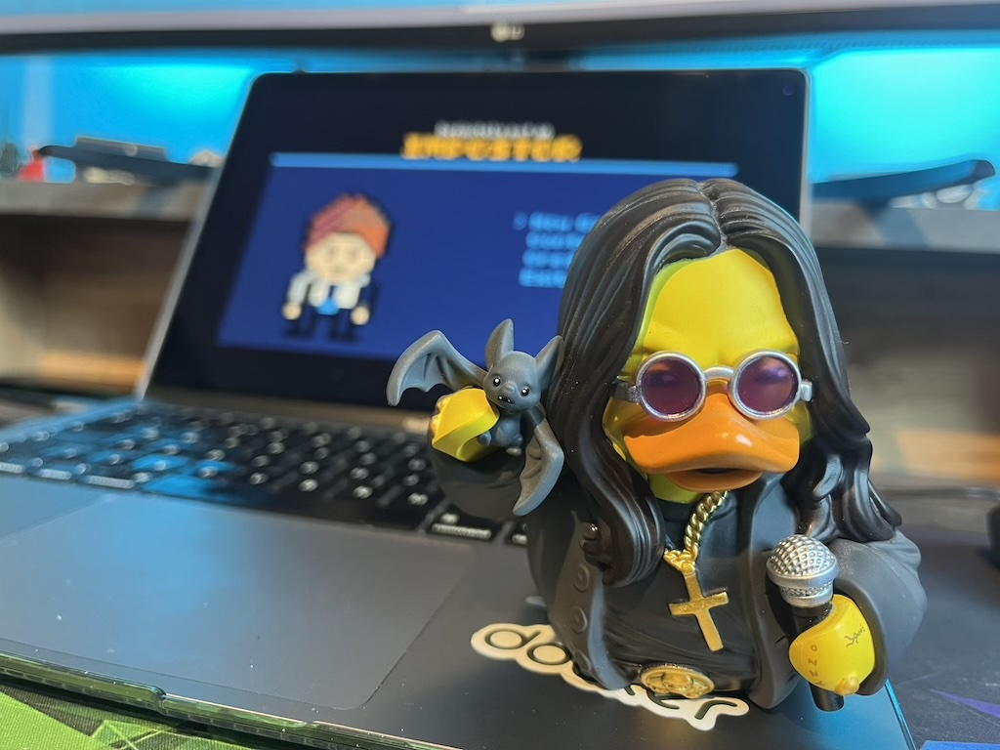
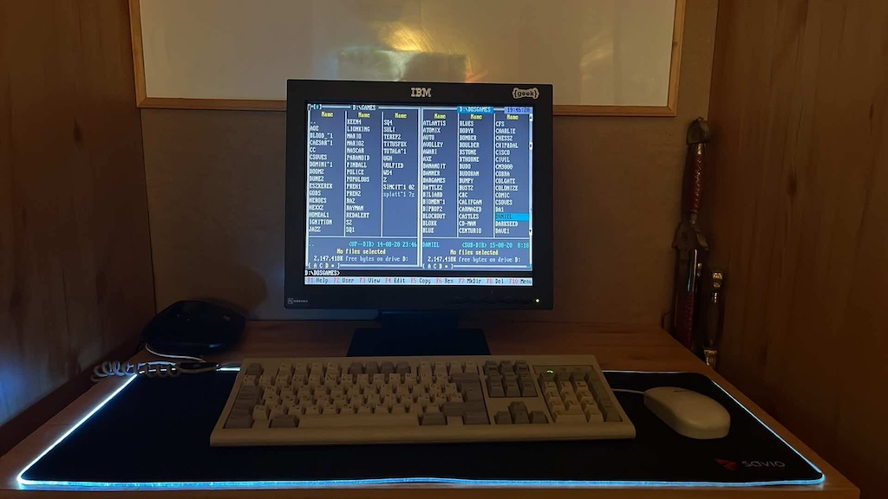
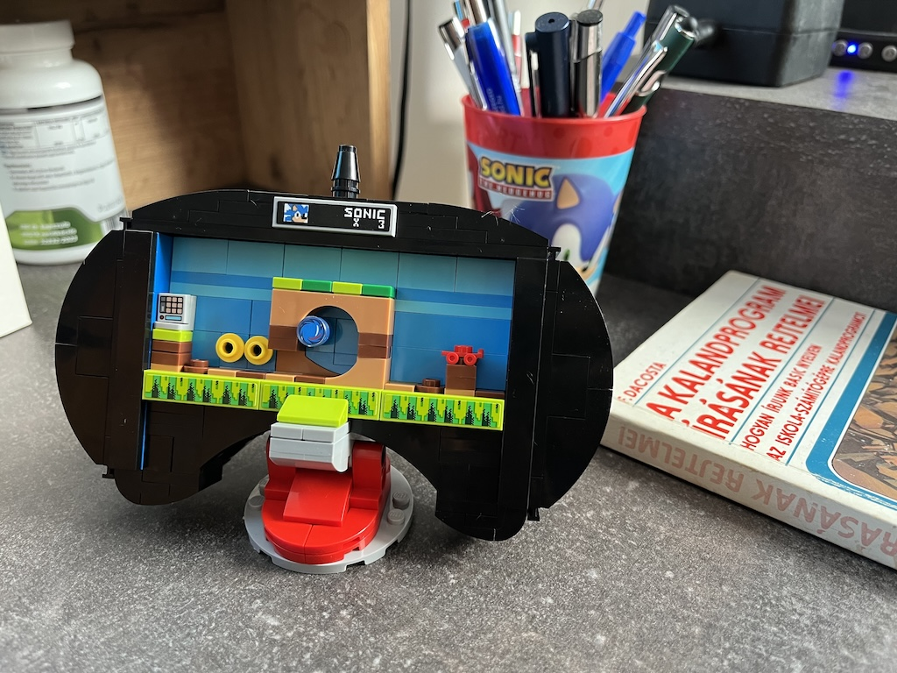

Zsolt Tasnadi
Software Architect • DevOps Expert • Programmer
Hi! I'm Tasi, a 39-year-old IT expert who fell in love with programming and IT system architectures. I was 11 (in 1999) when I learned HTML and the basics of the web, so I grew up with the Hungarian web culture. In the last 20 years, I have worked with a lot of technologies through many trends and eras of IT, from table-based static websites to the VueJS-based dynamic SPA-s, or from Drupal-powered sites to ESP32 microcontroller programming. I'm competent in more than 10 programming languages and countless frameworks. Since 2025, I am a member of the John von Neumann Computer Society (NJSZT).
| Birthday | 1987.06.16 |
| Birthplace | Budapest |
| Age | 39 |
| Location | Szeged, HU |
| rastasi@gmail.com | |
| Phone | +3620-489-35-35 |
| Web | teletype.hu |
My orientation is basically technical, I have loved the electronic world since my childhood, but besides that, I love to work with people, especially with children. I have a strong sense of how to teach and present any topic. I'm a system administrator and a Waldorf teacher as well.
| Period | Institution & Degree |
|---|---|
| 2002–2008 |
Petrik Lajos Secondary School System administration (OKJ 54 4641 03) |
| 2008–2012 |
Török Sándor Waldorf-pedagogical Institute Waldorf teacher (drama) |
| 2023 |
Centre of Vocational Education Szeged Cultural event organizer |
Over the last 20 years, I have worked with many technologies. Whenever I have an idea or a new job, I always concentrate on finding solutions, not on the technology stack which provides them. I have the courage and curiosity to learn new languages and frameworks.
MySQL/MariaDB, Postgres, MongoDB, ElasticSearch
TypeScript, Express, Sequelize, Mongoose, Knex
Rails, Sinatra, Padrino, Grape, Rack::App
Django, Flask
Drupal (5.x, 6.x, 7.x)
Foundation, Bootstrap, Material UI
Docker, Compose, Swarm
Kubernetes, Helm, Ansible, Terraform
Debian/Ubuntu, ISPConfig3, VMware, Jenkins, PM2
Skills, Marketplaces, MCP
I have had a number of jobs in different positions and different kinds of company over the years. In the last few years, I have founded and worked with a couple of startups. I relish this world and working with enthusiastic young teams.
| 2004–2008 | Gödöllő Waldorf School sysadmin and webmaster |
| 2009–2015 | Avignonet Ltd ISP sysadmin (ISPConfig3, PHP, NGINX, Postfix, Dovecot) |
| 2009–2017 | Syrakuza (own team) sales and project manager (Drupal 5.x–7.x) |
| 2012–2014 | PPT Group Ltd Ruby programmer (VOIP, XMPP expert) |
| 2013–2016 | Hungarian Waldorf Alliance sysadmin and webmaster |
| 2014–2015 | Brainsum Ltd Drupal developer (7.x) |
| 2015–2016 | VeryCreatives Ltd Ruby programmer (Ruby on Rails, React.js) |
| 2016–2018 | Electool Hungary Ltd Ruby programmer (Ruby on Rails, React.js) |
| 2016–2017 | Addventure Ltd co-founder, lead developer (Rails, Express, React.js) |
| 2018–2019 | Drukka Startup Studio CTO (Organizational & Technology development) |
| 2017–2020 | Flow Academy Ltd mentor (JavaScript, SQL, Clean Code, Express, React.js) |
| 2017–2021 | Ai Venture Ltd co-founder (Rails, Express, React.js, Facebook API, NLP) |
| 2017–2023 | Swipe Technologies (Salarify) co-founder, CTO (Express, React.js, K8s, Terraform) |
| 2021–2023 | Smart Babee Hungary advisor, backend dev (Express, React Native, Vue, AWS) |
| 2022–2023 | ReFilamer Ltd advisor, fullstack dev (Golang, Vue, C++, ESP32) |
| 2023–2025 | PublishDrive Ltd Engineering Team Lead (PHP, Laravel, Python, FastAPI, K8s, RabbitMQ) |
| 2024–2026 | Benchmark Games backend developer (Python, Redis, Postgres, K8s) |
| 2025–now | Zen Heads full-stack developer (Python, Postgres, Terraform, K8s, React) |
| 2026–now | Teletype Games organizer, programmer (TIC-80, Lua, DevOps) |
I have an interest in many different topics, for example, alternative operating systems and IT history. I have a collection of old game consoles. I love human topics as well, especially history and theology. I'm a Waldorf teacher, so I enjoy reading about psychology, pedagogy, and drama theory.

Our first Game: Definitely not an Impostor

Pentium I. 233Mhz MMX

Lego SEGA Controller